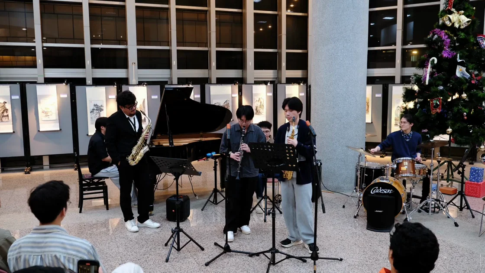

跳到主要內容
NYCU
Jazz
本學期
歷屆演出
爵士和聲、即興與合奏
林明學教授
課程綱要
（另開新分頁）
爵士期末
成果發表
114 學年度第 1 學期
12
/
10
2025 年・星期三
演出時間
19:00–20:30
地點
光復校區浩然圖書館一樓大廳
看曲目
↓
看演出名單

演出曲目
Take The A Train
From The Start
Beautiful Love
Shadow of Smile
Night and Day
My Favorite Thing
Wave
Emily
Chameleon
觀看
（另開新分頁）
看 YouTube 說明欄
（另開新分頁）
演出名單
演出者
方齊瑋、江品寬、林庭慧、金志潤、郭芷安、許安、傅永威、游子毅、陳冠圻、楊子霏、蔡禮安、韓沂展、顏慎皓、鄭毓獻
客席薩克斯風
林昱廷
指導
林明學
【114A】爵士和聲、即興與合奏 - 成果演奏發表會
【114A】爵士和聲、即興與合奏 - chameleon
← 較新的學期
115A
較早的學期 →
113B